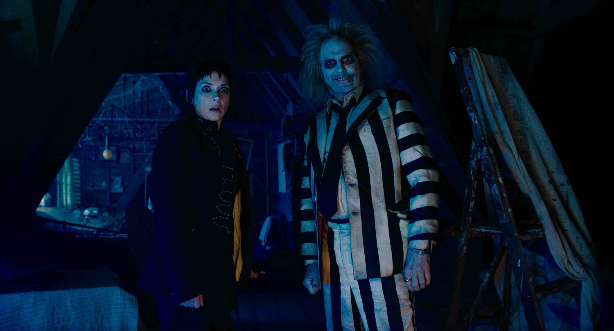

Рецензія на фільм «Бітлджюс Бітлджюс» Епічний подарунок на Гелловін від
Тіма Бертона
Культовий режисер Тім Бертон усім відомий своїми готичними й фентезійними
казками для дорослих, і однією з таких історій, що зробила його ім'я
популярним спочатку на всю Америку, а потім і на весь світ, стало фентезі
«Бітлджюс», що вийшло у 1988 році. Це був його перший режисерський хіт,
після якого він зняв свого «Бетмена» і «Едварда руки-ножиці», й історія
про скаженого біоекзорциста Бітлджюса швидко стала культовим фільмом в
американській культурі. Бертон багато років хотів зняти продовження цієї
стрічки, але чогось не вистачало його історії. А потім він побачив талант
Дженни Ортеґи, яку запросив у свій серіал «Венздей», і пазл склався. Так
на світ з'явився «Бітлджюс Бітлджюс».
У нас фільм «Бітлджюс» не настільки популярний, як в Америці, здебільшого
українці знають Бертона за його пізнішими творіннями, проте перед
переглядом сиквелу наполегливо раджу подивитися оригінал, інакше ви багато
пропустите. Головною героїнею оригіналу була тінейджерка-готка Лідія Дітц
у неймовірному виконанні юної Вайнони Райдер (це точно одна з її найкращих
ролей), яка відважно зіштовхнулася з божевільним демоном-біоекзорцистом
Бітлджюсом, найнятим однією парою привидів, які були не в захваті від
того, що в їхній будинок переїхали Дітци. Тоді Бітлджюс хотів за допомогою
шантажу одружитися з Лідією (її червона весільна сукня досі є одним з
найвідоміших костюмів американського кінематографа), проте дівчина та її
нові друзі-привиди змогли відправити його назад у Потойбіччя. Але усі ці
роки Бітлджюс тільки й чекав нагоди вирватися на свободу і возз'єднатися з
Лідією.

Сюжет сиквелу повертає Дітців – Лідію, її мачуху Делію та її доньку Астрід
– у містечко Вінтер-Рівер, куди вони прибувають на похорон близької
людини. Лідія досі має ту саму готичну зачіску, проте колись хоробра
дівчинка-бунтарка за ці роки спілкування з привидами на своєму успішному
телешоу перетворилася на втомлену й параноїдальну жінку, що живе на
пігулках. Її стосунки з Делією значно покращилися, чого не скажеш про її
стосунки з Астрід. Донька та матір мало спілкуються, бо Астрід не вірить у
те, що Лідія бачить привидів, а ще дівчина тяжко переживає смерть свого
батька, про якого Лідія рідко згадує. Та й новий дивний кавалер матері
Рорі, який також є менеджером її шоу, не допомагає, бо робить Лідії
пропозицію прямо на... похороні. Емоції вирують, і Бітлджюс не втрачає
шансу знову опинитися у світі живих, бо досі марить Лідією. Чи зможуть
вони знову його здихатися?
Дженна Ортеґа справді народилася для того, щоб зіграти тут доньку Вайнони
Райдер, і це не перебільшення, бо без неї складно (чи взагалі неможливо)
уявити цей довгоочікуваний сиквел. Якби не вона, то Бертон, можливо,
ніколи б і не зняв другу частину. Непрості стосунки матері й доньки стали
серцем другого «Бітлджюса» і точно відгукнуться у вашому серці, а їхні
божевільні пригоди в компанії демона-біоекзорциста точно порадують усіх
шанувальників класичного періоду Бертона. Після ролі Венздей Аддамс Ортеґа
стала справжньою принцесою Гелловіна, а роль Астрід Дітц закріпила за нею
це звання. Цікаво, яку ще готичну роль напише для неї Бертон у
майбутньому.
А тепер гучні аплодисменти Майклу Кітону, який знову перевтілився у
шаленого Бітлджюса після 36 років перерви! Під час перегляду сиквелу
здається, що за ці десятиліття він зовсім не змінився, це все той самий
шкідливий авантюрист з дуже чорним почуттям гумору та божевільним гримом,
яким він був у першій частині. Відчувається, що Кітон із захватом і
запалом погодився знову зіграти Бітлджюса, адже його шалена енергія
заряджає фільм і передається через екран глядачам. Як і те, що він разом з
Вайноною Райдер та Кетрін О'Гарою, яка грає Делію, був щасливий знову
опинитися у світі, народженому фантазією Бертона. Вони кайфують тут кожну
свою хвилину на екрані, як і актори, що грають нових персонажів. Це і
Віллем Дефо в образі актора, який став детективом у Потойбіччі, і шикарна
Моніка Беллуччі, яка грає мстиву колишню дружину Бітлджюса, що хоче
буквально висмоктати з нього душу, і Джастін Теру, який втілив нареченого
Лідії. А ще тут є круте камео у Денні ДеВіто, що стало просто вишенькою на
цьому фентезійному торті Бертона.
Після перегляду фільму «Бітлджюс Бітлджюс» можна сміливо заявити, що
Бертон після співпраці зі студією Disney (яка, здається, висмоктала з
нього всі соки) ще має в запасі чимало божевільних ідей, які він не
боїться втілювати на екрані. Його попередня стрічка «Дамбо», де теж
зіграли Кітон і ДеВіто, взагалі була бездушним рімейком, який знімали лише
заради грошей, а ось в сиквел «Бітлджюса» режисер (та й усі актори) вклав
усю свою душу й фантазію. Перед вами точно найкращий фільм жанру фентезі,
що вийшов в прокат у 2024 році (хоча цього року цей жанр ми бачили в кіно
досить рідко), та одне з найкращих фентезійних творінь Бертона за всю його
кар'єру. Це справжній подарунок на Гелловін усім шанувальникам творчості
цього талановитого режисера, створений від його щирого серця. Подивившись
його, вам точно захочеться вигукнути «Бітлджюс, Бітлджюс, Бітлджюс!» в
надії, що поруч одразу з'явиться шалений біоекзорцист і закрутить вас у
вихрі неймовірних пригод між двома світами.
Голлівуд зараз постійно знімає сиквели, навіть коли вони зовсім
непотрібні. Проте «Бітлджюс Бітлджюс» не відноситься до таких фільмів.
Це шикарний сиквел з великим серцем, який дивує та розважає на кожному
кроці, звертаючись до дитини, що живе в середині нас і вірить у дива. Не
дарма Бертон чекав цілих 36 років, щоб зняти таке гарне продовження
власної культової класики.